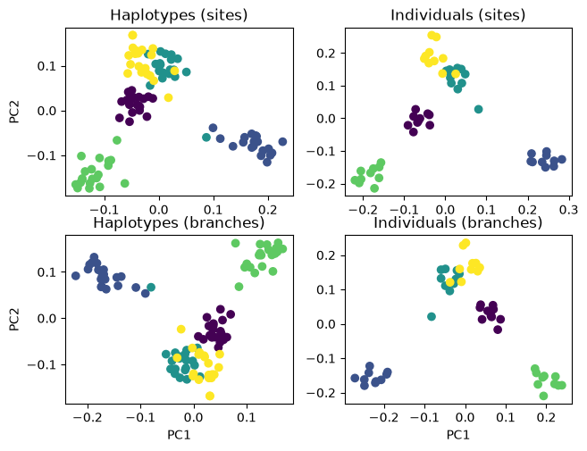
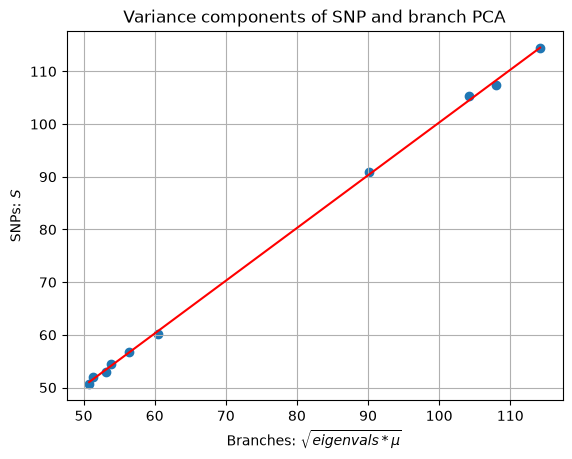
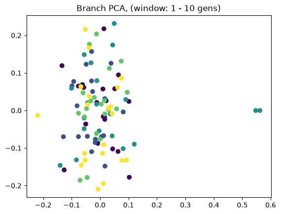
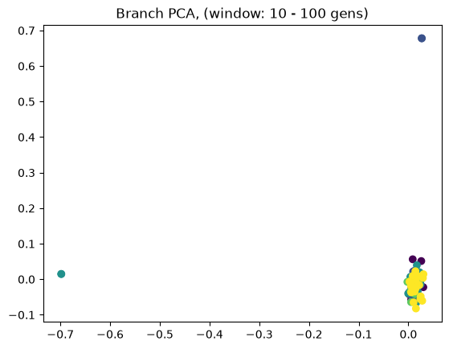
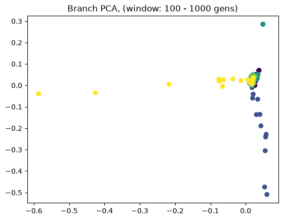
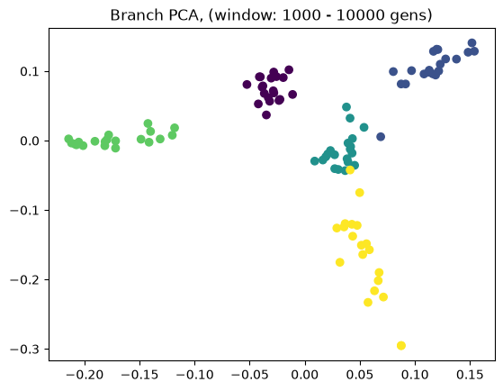
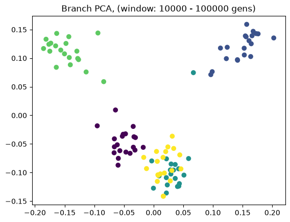
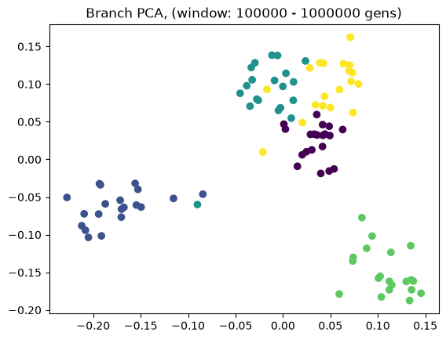
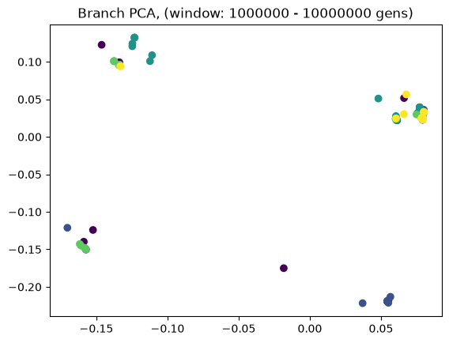
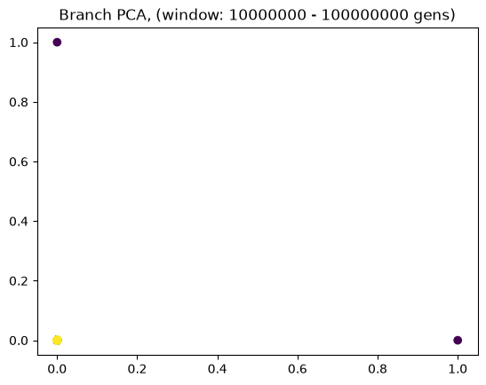

PCA, on branches and SNPs#
Principal Component Analysis (PCA) is commonly used for exploring population structure in genetic datasets, where it is usually computed from SNP genotyped data. In the context of ARGs, it is also possible to perform branch PCA as implemented in tskit. This does not use variant data. (Of course, it may indirectly rely on variant data if the ARG was inferred from data.)
In this tutorial, we demonstrate both approaches. We will apply these to haplotypes and diploid genotype data.
The documentation of tskit.TreeSequence.pca can be found here.
Note
Usually, PCA is carried out on a diploid genotype matrix (individuals in rows, loci in columns) with values 0, 1, and 2. PCA can then be achieved through singular value decomposition (SVD) of the column-centred genotype matrix. This results in a matrix of principal component (PC) scores, which are linear combinations of the genotype columns. The PC scores are ordered, decreasingly, by the amount of variation from the original data they account for.
First, we’ll simulate an ARG with population structure:
# load required libraries
import msprime
import tskit
import numpy as np
import matplotlib.pyplot as plt
from scipy.stats import linregress
# set a mutation rate
mu = 1e-8
# number of sub-populations/'islands'
nPop = 5
# number of diploids sampled from each sub-population
nSamp = 10
# number of haplotypes sampled
nHap = 2* nSamp
# per-island effective population size
nn = 1e4
# migration rate (per individual and island pair)
migRate = 1e-5
Simulate an ARG using an island model demography. There are five islands, each with a population size of 10,000. Pairwise migration rates are \(10^{-5}\).
# Island model demography, 5 islands connected by low gene flow
dmg = msprime.Demography.island_model([nn] * nPop, migration_rate=migRate)
# Simulate ARG
ts = msprime.sim_ancestry(samples={i: nSamp for i in range(nPop)},
demography=dmg,
random_seed=1234,
sequence_length=1e6,
recombination_rate=1e-8)
ts
|
|
|
|---|---|
| Trees | 9 323 |
| Sequence Length | 1 000 000 |
| Time Units | generations |
| Sample Nodes | 100 |
| Total Size | 1.4 MiB |
| Metadata | No Metadata |
| Table | Rows | Size | Has Metadata |
|---|---|---|---|
| Edges | 32 637 | 1019.9 KiB | |
| Individuals | 50 | 1.4 KiB | |
| Migrations | 0 | 8 Bytes | |
| Mutations | 0 | 16 Bytes | |
| Nodes | 6 346 | 173.5 KiB | |
| Populations | 5 | 388 Bytes | ✅ |
| Provenances | 1 | 2.4 KiB | |
| Sites | 0 | 16 Bytes |
| Provenance Timestamp | Software Name | Version | Command | Full record |
|---|---|---|---|---|
| 19 June, 2026 at 02:06:10 PM | msprime | 1.4.0 | sim_ancestry |
Detailsdictschema_version: 1.0.0
software:
dictname: msprimeversion: 1.4.0
parameters:
dictcommand: sim_ancestry
samples:
dict0: 101: 10 2: 10 3: 10 4: 10
demography:
dict
populations:
listdictinitial_size: 10000.0growth_rate: 0.0 name: pop_0 description:
extra_metadata:
dictdefault_sampling_time: None initially_active: None id: 0 __class__: msprime.demography.Population dictinitial_size: 10000.0growth_rate: 0.0 name: pop_1 description:
extra_metadata:
dictdefault_sampling_time: None initially_active: None id: 1 __class__: msprime.demography.Population dictinitial_size: 10000.0growth_rate: 0.0 name: pop_2 description:
extra_metadata:
dictdefault_sampling_time: None initially_active: None id: 2 __class__: msprime.demography.Population dictinitial_size: 10000.0growth_rate: 0.0 name: pop_3 description:
extra_metadata:
dictdefault_sampling_time: None initially_active: None id: 3 __class__: msprime.demography.Population dictinitial_size: 10000.0growth_rate: 0.0 name: pop_4 description:
extra_metadata:
dictdefault_sampling_time: None initially_active: None id: 4 __class__: msprime.demography.Population
events:
list
migration_matrix:
listlist0.01e-05 1e-05 1e-05 1e-05 list1e-050.0 1e-05 1e-05 1e-05 list1e-051e-05 0.0 1e-05 1e-05 list1e-051e-05 1e-05 0.0 1e-05 list1e-051e-05 1e-05 1e-05 0.0 __class__: msprime.demography.Demography sequence_length: 1000000.0 discrete_genome: None recombination_rate: 1e-08 gene_conversion_rate: None gene_conversion_tract_length: None population_size: None ploidy: None model: None initial_state: None start_time: None end_time: None record_migrations: None record_full_arg: None additional_nodes: None coalescing_segments_only: None num_labels: None random_seed: 1234 stop_at_local_mrca: None replicate_index: 0
environment:
dict
os:
dictsystem: Linuxnode: runnervm7b5n9 release: 6.17.0-1018-azure version: #18~24.04.1-Ubuntu SMP Thu May 28 16:39:11 UTC 2026 machine: x86_64
python:
dictimplementation: CPythonversion: 3.11.15
libraries:
dict
kastore:
dictversion: 2.1.2
tskit:
dictversion: 1.0.3
gsl:
dictversion: 2.6 |
The same ARG, but with mutations added.
# Add mutations
tsm = msprime.sim_mutations(ts, rate=mu, random_seed=1234)
tsm
|
|
|
|---|---|
| Trees | 9 323 |
| Sequence Length | 1 000 000 |
| Time Units | generations |
| Sample Nodes | 100 |
| Total Size | 2.2 MiB |
| Metadata | No Metadata |
| Table | Rows | Size | Has Metadata |
|---|---|---|---|
| Edges | 32 637 | 1019.9 KiB | |
| Individuals | 50 | 1.4 KiB | |
| Migrations | 0 | 8 Bytes | |
| Mutations | 13 100 | 473.4 KiB | |
| Nodes | 6 346 | 173.5 KiB | |
| Populations | 5 | 388 Bytes | ✅ |
| Provenances | 2 | 3.1 KiB | |
| Sites | 13 017 | 317.8 KiB |
| Provenance Timestamp | Software Name | Version | Command | Full record |
|---|---|---|---|---|
| 19 June, 2026 at 02:06:10 PM | msprime | 1.4.0 | sim_mutations |
Detailsdictschema_version: 1.0.0
software:
dictname: msprimeversion: 1.4.0
parameters:
dictcommand: sim_mutations
tree_sequence:
dict__constant__: __current_ts__rate: 1e-08 model: None start_time: None end_time: None discrete_genome: None keep: None random_seed: 1234
environment:
dict
os:
dictsystem: Linuxnode: runnervm7b5n9 release: 6.17.0-1018-azure version: #18~24.04.1-Ubuntu SMP Thu May 28 16:39:11 UTC 2026 machine: x86_64
python:
dictimplementation: CPythonversion: 3.11.15
libraries:
dict
kastore:
dictversion: 2.1.2
tskit:
dictversion: 1.0.3
gsl:
dictversion: 2.6 |
| 19 June, 2026 at 02:06:10 PM | msprime | 1.4.0 | sim_ancestry |
Detailsdictschema_version: 1.0.0
software:
dictname: msprimeversion: 1.4.0
parameters:
dictcommand: sim_ancestry
samples:
dict0: 101: 10 2: 10 3: 10 4: 10
demography:
dict
populations:
listdictinitial_size: 10000.0growth_rate: 0.0 name: pop_0 description:
extra_metadata:
dictdefault_sampling_time: None initially_active: None id: 0 __class__: msprime.demography.Population dictinitial_size: 10000.0growth_rate: 0.0 name: pop_1 description:
extra_metadata:
dictdefault_sampling_time: None initially_active: None id: 1 __class__: msprime.demography.Population dictinitial_size: 10000.0growth_rate: 0.0 name: pop_2 description:
extra_metadata:
dictdefault_sampling_time: None initially_active: None id: 2 __class__: msprime.demography.Population dictinitial_size: 10000.0growth_rate: 0.0 name: pop_3 description:
extra_metadata:
dictdefault_sampling_time: None initially_active: None id: 3 __class__: msprime.demography.Population dictinitial_size: 10000.0growth_rate: 0.0 name: pop_4 description:
extra_metadata:
dictdefault_sampling_time: None initially_active: None id: 4 __class__: msprime.demography.Population
events:
list
migration_matrix:
listlist0.01e-05 1e-05 1e-05 1e-05 list1e-050.0 1e-05 1e-05 1e-05 list1e-051e-05 0.0 1e-05 1e-05 list1e-051e-05 1e-05 0.0 1e-05 list1e-051e-05 1e-05 1e-05 0.0 __class__: msprime.demography.Demography sequence_length: 1000000.0 discrete_genome: None recombination_rate: 1e-08 gene_conversion_rate: None gene_conversion_tract_length: None population_size: None ploidy: None model: None initial_state: None start_time: None end_time: None record_migrations: None record_full_arg: None additional_nodes: None coalescing_segments_only: None num_labels: None random_seed: 1234 stop_at_local_mrca: None replicate_index: 0
environment:
dict
os:
dictsystem: Linuxnode: runnervm7b5n9 release: 6.17.0-1018-azure version: #18~24.04.1-Ubuntu SMP Thu May 28 16:39:11 UTC 2026 machine: x86_64
python:
dictimplementation: CPythonversion: 3.11.15
libraries:
dict
kastore:
dictversion: 2.1.2
tskit:
dictversion: 1.0.3
gsl:
dictversion: 2.6 |
The migration rates between the islands are quite low. This should lead to considerable genetic differentiation. Let us compute pairwise \(F_{ST}\):
# Considerable pairwise Fst between the 'islands'
fstmat = np.zeros([nPop,nPop])
for i in range(nPop-1):
for j in range(i+1,nPop):
fstmat[i,j] = tsm.Fst([range(i*nHap,(i+1)*nHap), range((i+1)*nHap,(i+2)*nHap)])
fstmat
array([[0. , 0.19592491, 0.19592491, 0.19592491, 0.19592491],
[0. , 0. , 0.16711673, 0.16711673, 0.16711673],
[0. , 0. , 0. , 0.18496855, 0.18496855],
[0. , 0. , 0. , 0. , 0.17865096],
[0. , 0. , 0. , 0. , 0. ]])
Branch PCA (tskit)#
To demstrate that branch PCA works without variant data, we run it on the ARG without mutations, ts.
# haplotypes, each sample haplotype is ues by default
hapBranchPca=ts.pca(num_components=10)
# genotypes, all individuals are specified
dipBranchPca=ts.pca(num_components=10, individuals=range(5*nSamp))
PCA ‘by hand’#
To compute a traditional SNP PCA, we start by extracting the haploid ‘genotypes’ from the ARG. We then make use of the TreeSequence object’s individuals_nodes property (an array) to select each individual’s two haplotypes and to add them to create individual diploid genotypes.
# obtain a haplotype matrix from the tree sequence with mutation; print its shape
# 100 haplotypes (= 10 individual samples * 5 islands * 2 haplotypes per individual)
# 13683 variant sites
htMat=tsm.genotype_matrix().transpose()
htMat.shape
(100, 13017)
# Add each individual's two haplotypes to generate individual genotypes
sample_ids_to_mat_index = np.full_like(tsm.samples(), tskit.NULL, shape=tsm.num_nodes)
sample_ids_to_mat_index[tsm.samples()] = np.arange(len(tsm.samples()))
gtMat = htMat[sample_ids_to_mat_index[ts.individuals_nodes]].sum(axis=1)
# Haplotype SVD (column-centred)
hapSvd = np.linalg.svd(htMat - htMat.mean(axis=0), full_matrices=False)
# Genotype SVD (column-centred)
dipSvd = np.linalg.svd(gtMat - gtMat.mean(axis=0), full_matrices=False)
Plot for comparison#
Note that PCA does not preserve the axis orientation. The plots in the panels below will show similar patterns but one or both axes may be flipped.
fig, axs = plt.subplots(2, 2)
plt.tight_layout()
axs[0, 0].scatter(hapSvd.U[:,0],
hapSvd.U[:,1],
c=np.repeat([1,2,3,4,5], [nHap] * nPop))
axs[0, 0].set_title('Haplotypes (sites)')
axs[0,0].set_ylabel("PC2")
axs[0,1].scatter(dipSvd.U[:,0],
dipSvd.U[:,1],
c=np.repeat([1,2,3,4,5], [nSamp] * nPop))
axs[0,1].set_title("Individuals (sites)")
# flipping the axes to make similarity clearer:
axs[1,0].scatter(hapBranchPca.factors[:,0],
hapBranchPca.factors[:,1],
c=np.repeat([1,2,3,4,5], [nHap] * nPop))
axs[1,0].set_title("Haplotypes (branches)")
axs[1,0].set_ylabel("PC2")
axs[1,0].set_xlabel("PC1")
axs[1,1].scatter(dipBranchPca.factors[:,0],
dipBranchPca.factors[:,1],
c=np.repeat([1,2,3,4,5], [nSamp] * nPop))
axs[1,1].set_title("Individuals (branches)")
axs[1,1].set_xlabel("PC1")
plt.show()

The plots on the left show one dot per haplotype. These have twice as many dots as the plots on the right, which show individuals. The colours indicate from which of the five islands a haplotype or individual was sampled. As expected with low geneflow, there is some grouping by island. Feel free to re-run with higher or lower values of migRate to see how the separations between the island samples changes.
Comparing variance components between branch and SNP PCA#
Both numpy.linalg.svd and tskit.TreeSequence.pca return information about the amount of variation accounted for by each PC. These information are stored in the slots S (standard variation for SVD) and eigenvalues (variance for branch PCA). To make the two match, we need to multiply the eigenvalues by the mutation rate before taking the square root.
# square root of (branch eigenvalues multiplied by the mutation rate)
xx=np.sqrt(hapBranchPca.eigenvalues * mu)
# SVD S values
yy=hapSvd.S[:10]
We now fit a least-squares regression model to demonstrate the match between SVD standard variation and transformed eigenvalues.
res = linregress(xx, yy)
print(f"Intercept: {res.intercept:.4f}\n Slope: {res.slope:.4f}\n r^2: {res.rvalue**2:.4f}")
Intercept: 0.2160
Slope: 1.0008
r^2: 0.9996
\(r^2\) is close to 1. Let us visualise this. Each dot below shows a standard deviation value associate with one PC. The fact that they are well correlated suggests that both SNP and branch PCA yielded very similar results.
plt.scatter(xx, yy)
plt.xlabel("sqrt(Branch eigenvals)")
plt.ylabel("GT svd.S")
plt.plot(xx, res.intercept + res.slope*xx, 'r', label='fitted line')
plt.xlabel(r"Branches: $\sqrt{eigenvals * \mu}$") # use raw string to avoid error message about \s
plt.ylabel("SNPs: $S$")
plt.title("Variance components of SNP and branch PCA")
plt.grid()
plt.show()

Time windows#
Above we showed how variant and branch-based PCA are equivalent. But the ARG is a much richer data type than the genotype matrix. ARGs contain information about the historic relationships between the samples (possibly blurred by a inference step). Branch PCA allows one to specify a time window over which the PCA is to be computed, something that cannot be done for SNP PCA. Next, we compute PCA in time slices with breaks 0, 10, 100, 1000, 10,000, 100,000, 100,0000, 1,000,000, and 10,000,000. The results are stored in a list.
pctime=[tsm.pca(num_components=10, time_windows=[10**i, 10**(i+1)]) for i in range(8)]
Being of class PCAResult, the elements of the list have a factors property. This has a shape of (100,10). I.e., 10 PCs for 100 haplotypes.
pctime[0].factors.shape
(100, 10)
for i in range(8):
evecs = pctime[i].factors[:,:10]
plt.scatter(evecs[:,0],
evecs[:,1],
c=np.repeat(range(5), 20))
plt.title(f"Branch PCA, (window: {10**i} - {10**(i+1)} gens)")
plt.show()








When selecting a very old window, each individual contributes to its own PC, causing most to be plotted at the origin (0,0). We can see this when inspecting the oldest window’s PC scores, which are an identityt matrix. All haplotypes below the first two have 0 entries for the first two PC scores (the two left-most columns).
pctime[7].factors[:20,:10]
array([[1., 0., 0., 0., 0., 0., 0., 0., 0., 0.],
[0., 1., 0., 0., 0., 0., 0., 0., 0., 0.],
[0., 0., 1., 0., 0., 0., 0., 0., 0., 0.],
[0., 0., 0., 1., 0., 0., 0., 0., 0., 0.],
[0., 0., 0., 0., 1., 0., 0., 0., 0., 0.],
[0., 0., 0., 0., 0., 1., 0., 0., 0., 0.],
[0., 0., 0., 0., 0., 0., 1., 0., 0., 0.],
[0., 0., 0., 0., 0., 0., 0., 1., 0., 0.],
[0., 0., 0., 0., 0., 0., 0., 0., 1., 0.],
[0., 0., 0., 0., 0., 0., 0., 0., 0., 1.],
[0., 0., 0., 0., 0., 0., 0., 0., 0., 0.],
[0., 0., 0., 0., 0., 0., 0., 0., 0., 0.],
[0., 0., 0., 0., 0., 0., 0., 0., 0., 0.],
[0., 0., 0., 0., 0., 0., 0., 0., 0., 0.],
[0., 0., 0., 0., 0., 0., 0., 0., 0., 0.],
[0., 0., 0., 0., 0., 0., 0., 0., 0., 0.],
[0., 0., 0., 0., 0., 0., 0., 0., 0., 0.],
[0., 0., 0., 0., 0., 0., 0., 0., 0., 0.],
[0., 0., 0., 0., 0., 0., 0., 0., 0., 0.],
[0., 0., 0., 0., 0., 0., 0., 0., 0., 0.]])
Empirical data#
Here, we demonstrated using simulated data how SNPs and ARG branches lead to equivalent PCA results. For empirical data, the ancestral states of variant sites are not known a priori, which will in practice often lead to polarisation differences. That may affect the outcome of PCA.
TODO: Extend Tutorial to empirical data.